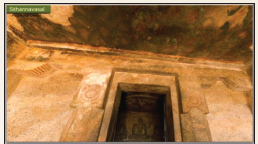
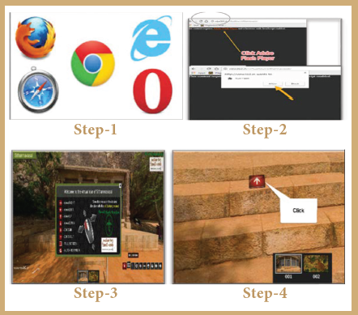

ICT CORNER
Virtual Tour of Sittanavasal
Through this activity you will be able to see Virtual Tour about Cave Paintings in Tamil Nadu

Step 1. Open the Browser and type the URL or scan QR code which is given below.
Step 2. You can see Virtual Tour website. Click to allow Adobe Flash Player on the screen.
Step 3. Open slide view in menu bar and access control button
Step 4. Click “Red Arrow Button” you can see cave paintings

URL
http://view360.in/virtualtour/sithannavasal/